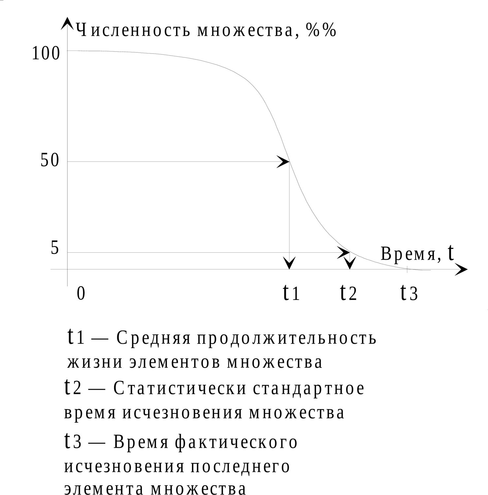

11.3.1. Изменение соотношения эталонных частот биологического и социального времени
Том 3 · osnovy-sociologii-tom-3.pdf · стр. 362 (кандидат) · Кандидат страницы PDF; требуется сверка · источник: PDF/DOC данной редакции.
Содержит авторские утверждения; их фактическая достоверность оценивается отдельно.
11.3.1. Изменение соотношения эталонных частот биологического и социального времени
Для ответа на второй вопрос, из числа поставленных в конце раздела 11.1, снова обратимся к рассмотрению взаимодействия популяций биологических видов со средой обитания. В высокоразвитых биологических видах их адаптация к среде обитания носит двухуровневый (или, иначе говоря, — двухканальный) характер:
К медленным, по отношению к смене поколений изменениям среды обитания, всякий вид (популяция) приспосабливается изменением врождённых свойств особей в новых поколениях в пределах статистического разброса свойств особей, допускаемого генетикой (тем, что в биологии получило название «ненаправленной изменчивости»). Это — один канал течения информационных процессов.
К быстрым, по отношению к смене поколений изменениям, вид (популяция) не могут приспособиться изменением врождённых свойств особей, вследствие чего к новым факторам среды приспосабливаться должны все особи, которые с ними сталкиваются в своей жизни.
<!-- -->
Те особи, которые, столкнувшись с давлением какого-либо фактора среды обитания, не могут к нему приспособиться, гибнут статистически чаще — как вследствие прямого воздействия на них этого фактора, так и вследствие разного рода причин внутренней (по отношению к границам их организмов) локализации, вызванных к жизни «стрессами» и «неврозами», порождёнными воздействием факторов среды обитания1.
Те особи, которые приспособились, избегают гибели под прямым воздействием фактора и не испытывают «стрессов» и «неврозов».
Это — второй канал течения информационных процессов в жизни биологической вида как системной целостности в составе биосферы.
Описанная общебиологическая закономерность жизни всех без исключения высокоразвитых биологических видов на Земле по отношению к виду «Человек разумный» обладает своеобразием. Оказывается, что одним из факторов воздействия среды обитания на человека, на который человек как биологический вид так или иначе должен отреагировать, стал порождённый им же технико-технологический прогресс и его последствия.
В представлениях большинства пишущих на эту тему, воздействие технико-технологического прогресса на среду обитания и человека выражается в основном в следующем:
- Загрязнение среды обитания техногенными и биогенными вещественными отходами производства и быта, вследствие чего целые регионы (как на суше, так и в мировом океане) превращаются в свалки, которые вытесняют сложившиеся прежде в них и вокруг них биоценозы, а в круговорот веществ в природе и в трофические цепи2 биосферы оказываются вовлечёнными химические соединения, прежде им не свойственные, которые нарушают естественную физиологию и генетику живых организмов, включая и организмы людей.
<!-- -->
Локальный разогрев среды обитания техногенной энергией и изменение вследствие этого динамики атмосферных и гидросферных процессов, влекущие за собой изменение климата на планете в целом и в её регионах. Именно это называется «глобальным потеплением», хотя в нём есть и химически обусловленная составляющая (так называемые «парниковые газы»). На том, что «глобальное потепление» имеет место, — одни исследователи настаивают, а другие не менее настойчиво их опровергают. Однако термин «глобальное потепление» — неадекватен, поскольку искажает представления людей о происходящем в действительности.
Общий объём выработки техногенной энергии человечеством к настоящему времени находится в пределах естественных годовых колебаний энергетического баланса планеты и в пределах ошибки при его оценке3. Именно по этой причине говорить о глобальном потеплении как таковом нет оснований.
Тем не менее локальные воздействия техногенных энергопотоков могут вызывать последствия глобального масштаба: как утверждают метеорологи, каждый старт «Шаттла» с космодрома на мысе Канаверал во Флориде ломает прогнозы погоды для регионов, примыкающих к Северной Атлантике, на две недели вперёд. Кроме того, статистический анализ выявляет корреляцию4 засух в Африке, ливней в США, слякотных зим в Европе, сильных землетрясений в Мексике, Калифорнии и на Аляске с активностью космодрома во Флориде (см. Рыбников С. «Кувалдой по хрустальному своду», журнал «Знание — сила», № 5, 1991). Т.е. под воздействием локального разогрева среды обитания техногенной энергией теряет устойчивость глобальная климатическая система, успевшая сложиться до того времени, как техногенная энергетика стала определять лицо нынешней цивилизации, но это — не «глобальное потепление», а совсем иное явление.
<!-- -->
- Изменение естественно природных уровня и мелодической модуляции («форматирования») фона проникающей радиации (потоков разнородных «элементарных» частиц, γ-излучения, иных видов излучения) и фона физических полей (электромагнитного, электростатического, вибро-акустического и т.п.) под воздействием технико-технологической деятельности.
В наиболее тяжёлых случаях всё названное в совокупности может приводить к уничтожению сложившихся в регионах планеты биоценозов и замещению их новыми. Это явление, обретая массовый и повсеместный характер, в свою очередь способно привести к уничтожению нынешней биосферы планеты как системной целостности со всеми вытекающими из этого результата последствиями, в том числе — и для вида «Человек разумный», поскольку в последующей биосфере ему может просто не оказаться места — экологической ниши.
И если человечество осмысленно-волевым порядком не изменит качества своей жизни, то очередная катастрофа культуры глобальной цивилизации будет спровоцирована глобальным биосферно-экологическим кризисом, от реализации какого рода возможности предостерегал ещё Христос:
«Род лукавый и прелюбодейный ищет знамения; и знамение не дастся ему, кроме знамения Ионы пророка» (Матфей, 12:39; и вторично — Матфей, 16:4).
Одним из своих аспектов знамение Ионы пророка (см. Ветхий завет, книга Ионы) имело утеснение Ионы в пищеварительном тракте (в ротовой полости, в которой есть некоторый объём, заполненный воздухом) некоего кита, т.е. Иона был утеснён в особого рода биосферном объекте; это было воздаянием за то, что Иона предпринял попытку уклониться от исполнения своей миссии в Промысле.
При переходе от личностного масштаба рассмотрения к глобально-цивилизационному с этим эпизодом вполне соотносится утеснение человечества в нынешнем биосферно-экологическом кризисе. Вариантов завершения этого утеснения два:
либо одуматься, самим изменить качество своей жизни и, вернувшись в русло Промысла, обрести свободу (что и проделал Иона);
либо упорствовать в уклонении от Промысла и в противоборстве ему и потому погибнуть, как уже в прошлом нынешней глобальной цивилизации уже́ не раз экологическим самоубийством завершили свою историю некоторые самобытные культуры в её составе (на территории современной пустыни Сахары, Наска, остров Пасхи и другие)5.
Однако кроме названных выше факторов, в действии которых выражается экологический кризис, есть ещё один — более значимый для судеб человечества фактор, поскольку именно его воздействие способно остановить развитие биосферно-экологического и сопутствующих ему социальных кризисов, если люди адекватно отреагируют на него.
Этот фактор может быть описан вкратце в следующих словах:
В древности, несколько тысяч лет тому назад, на заре становления нынешней глобальной цивилизации скорость течения технико-технологического прогресса была близка к нулю. Это выражалось в том, что через практически неизменный в технико-технологическом отношении мир проходили десятки, если не сотни поколений людей.
В настоящее время в течение жизни одного поколения успевают смениться несколько поколений техники и технологий6.
Значимость этого изменения качества жизни глобальной цивилизации для её будущего — огромна.
Сказанное необходимо пояснить, дав основу для формирования образных представлений о тех явлениях, которые необходимо осознавать и к которым необходимо осмысленно относиться, чтобы не быть обречённым на самоубийство пленником предубеждения, рабом которого был булгаковский Пилат на момент разговора с Иешуа, приведённого в разделе 11.1.
На рис. 11.3.1-1 показан характер убыли с течением времени элементов из первоначального состава некоторого множества. Предполагается, что в начальный момент времени множество определенó по персональному составу элементов, и его численность составляет 100 % . Далее под воздействием внешних (окружающей среды) и внутренних обстоятельств (исчерпание ресурса функциональности) элементы множества гибнут. В качестве такого рода множеств можно рассматривать популяции живых организмов, культурно своеобразные общества, а так же — множества технологий и иных социально значимых знаний и навыков, которые свойственны культуре того или иного общества в тот или иной период его бытия.

Рис. 11.3.1-1. Характер убыли элементов
из первоначального состава
множества с течением времени
Если в популяции живых организмов выявить её персональный состав, а потом следить, как выявленные в начальный момент времени особи исчезают из популяции, то получится примерно такой же по характеру график, как показан на рис. 11.3.1-1, но с количественно определённым масштабом по осям времени и численности.
Процесс, показанный на рис. 11.3.1-1, не означает, что с его завершением популяция исчезнет. Хотя такое и возможно в принципе, но в подавляющем большинстве случаев происходит обновление персонального состава членов популяции (т.е. имеет место замещение элементов первоначального множества элементами другого хронологически более позднего множества). То есть с исчезновением одного множества, выявленного по персональному составу в начальный момент времени, можно выявить новое множество, характеризующееся своим персональным составом. Об исчезновении выявленного по персональному составу множества можно говорить и в статистическом смысле: т.е. можно считать, что исчезновение множества произошло, если исчез какой-то определённый и постоянный (как правило, для всех рассматриваемых в хронологической последовательности множеств) процент из первоначальных 100 % , например 5 %, 80 % , или 95 % (t<sub>2</sub> — статистически стандартное время исчезновения множества на рис. 11.3.1-1 соответствует исчезновению 95 % его элементов, зарегистрированных в начальный момент времени; но в каких-то задачах может быть избран значительно более чувствительный стандарт, например 5 %-ная убыль первоначального состава).
Обратимся к рис. 11.3.1-2 (на следующей странице). В верхней его части условно показана общая продолжительность и направленность течения глобального исторического процесса (шкала времени — условная, неравномерная по отношению к астрономическому году). Ниже размещены две оси времени. На них изображены два процесса. На верхней хронологической оси — процесс преемственной смены поколений людей. На следующей хронологической оси — процесс обновления технологий и прикладных жизненных навыков.
Ещё ниже расположена третья система координат, в которой показано изменение соотношения скоростей течения двух названных выше процессов — исключительно биологического и внутриобщественного.
Чисто формально по алгоритмам построения графиков каждый из процессов, изображённых на первой и второй хронологических осях рис. 11.3.1-2, идентичны — как процессу, изображённому на рис. 11.3.1-1, так и между собой.
Рис. 11.3.1-2. Изменение соотношения эталонных частот
биологического и социального времени
При этом предполагается, что в каждый момент течения глобального исторического процесса можно выявить по персональному составу поколение людей. Оно будет обладать в этот момент 100-процентной численностью, которая будет сокращаться вплоть до полного исчезновения этого поколения. Но поскольку рождаются новые люди, которые не входят в состав первоначально выявленного множества, то в тот момент исторического процесса, когда исчезнет ранее выявленное поколение, можно выявить очередное поколение, также обладающее в этот момент 100‑процентной численностью.
Аналогично предполагается, — и это предположение не противоречит возможностям археологии, — что в начальный период становления цивилизации выявлено некоторое вполне определённое по своему составу множество технологий и жизненных навыков. Далее по мере исторического развития технологии и жизненные навыки, принадлежащие этому множеству, постепенно выходят из употребления. К тому моменту исторического времени, когда исчезнет начальное множество технологий и жизненных навыков, можно будет выявить какое-то иное множество технологий и жизненных навыков. Возможно, что под влиянием научно-технического прогресса оно будет более многочисленным, чем ему предшествующие, тем не менее численность выявленных новых технологий тоже можно считать равной 100 %, чтобы упростить построение графика.
Момент исчезновения определённых по персональному составу множеств (как для поколений людей, так и для поколений технологий и жизненных навыков), как было отмечено ранее при обсуждении рис. 11.3.1-1, можно понимать и в статистическом смысле: поскольку полное исчезновение, фиксируемое по исчезновению последнего из элементов множества, может оказаться далеко выпадающим из всей остальной статистики и не характерным для неё, то можно считать, что исчезновение множества произошло, если исчез какой-то определённый и постоянный (для всех случаев сопоставления) процент из первоначальных 100 %, например 80 % первоначально выявленных технологий. Также можно подходить и к процессу обновления поколений людей: т.е., не дожидаясь ухода из жизни последнего долгожителя, можно считать, что, если ушло из жизни 80 % некогда выявленного персонального состава населения, то поколение заместилось новым.
Соответственно, при полной формальной идентичности построения, содержательное отличие первого и второго графиков в верхней части рис. 11.3.1-2 друг от друга — в разном характере соизмеримости с эталоном астрономического времени7 1) процесса смены поколений людей и 2) процесса смены поколений технологий и жизненных навыков.
Среднестатистическая продолжительность жизни поколения людей — Т<sub>б средн</sub> обусловлена генетически, и на протяжении истории нынешней глобальной цивилизации она изменялась в весьма ограниченных пределах: Т<sub>б средн</sub> = в пределах столетия ± десятки лет. Хотя среднестатистическая продолжительность жизни людей и росла на протяжении памятной истории нынешней цивилизации, однако она не выросла многократно. Вследствие этого её можно считать приблизительно неизменной8 по отношению к эталону астрономического времени.
Поскольку любой ритмический процесс может служить эталонным процессом времени, то и описанный выше процесс смены преемственных поколений людей тоже может быть избран в качестве эталонного процесса времени — времени биологического9. Это показано на верхней (первой) оси времени рис. 11.3.1-1 слева от разрывов горизонтальных осей графиков, отделяющих глубокую древность от нашей эпохи — исторического времени жизни современных и лично памятных прошлых поколений, к которым принадлежали отцы и деды ныне живущих.
Процесс обновления технологий и жизненных навыков, показанный на второй оси времени в верхней части рис. 11.3.1-2 как последовательность множеств, теряющих свои элементы, также может быть избран в качестве эталонного процесса времени. Но, в отличие от верхнего графика, продолжительность «жизни» поколений технологий и жизненных навыков на протяжении всей истории не является неизменной (по отношению к астрономическому эталону времени), даже приближённо: в ходе глобального исторического процесса имеет место сокращение периода вытеснения прежних технологий и жизненных навыков новыми поколениями технологий и жизненно значимых навыков. Т.е. процесс обновления технологий и социально значимых навыков ускоряется на протяжении всей истории, если соотносить его с астрономическим эталоном времени.
Характер отношения частот процессов на первой и второй хронологических осях на рис. 11.3.1-2, имевший место в левой его части, в правой его части изменился на качественно противоположный. Математически это выражается так: на заре нынешней цивилизации соотношение эталонных частот10 биологического и социального (технологически обусловленного) времени было таким11: f<sub>б</sub> >> f<sub>с</sub> ; в ходе её развития стало: f<sub>с</sub> > f<sub>б</sub><sub> </sub>. Т.е. произошло изменение соотношения эталонных частот биологического и социального времени. Графически это изменение соотношения эталонных частот времени показано в нижней части рис. 8 вдоль третьей хронологической оси.
Выявленные частоты f<sub>б</sub> и f<sub>с</sub> — это меры скорости обновления информационного состояния общества (как иерархически организованной системы) на биологическом и социальном уровнях в её организации соответственно. На нижнем графике (вдоль третьей хронологической оси рис. 11.3.1-2) U<sub>Г</sub> (приблизительно неизменная на протяжении всей истории) характеризует скорость обновления генетической информации (мнемонический индекс «Г») в популяции; возрастающая на протяжении всей истории U<sub>С</sub> характеризует скорость обновления культуры как свойственной обществу информации внегенетической, т.е. не передаваемой от поколения к поколению в готовом к употреблению виде на основе генетического механизма биологического вида «Человек разумный» (мнемонический индекс «С» означает «социальная»).
Следует обратить внимание на то, что определения частот эталонов биологического и социального времени, построенные нами, являются функциями статистических стандартов, представляющих собой субъективно избранную меру обновления информации обоих видов (генетически и культурно обусловленной) в обществе. Это не означает, что утверждение об изменении соотношения эталонных частот биологического и социального времени — порождение нашего субъективизма, в силу чего все остальные люди свободны от воздействия на них этого жизненного явления; сказанное означает, что в отношении всякого множественного процесса, описываемого средствами математической статистики, субъективно могут быть избраны разные значения статистических стандартов, являющихся пороговыми значениями для выявления тех или иных изменений в течении множественного процесса.
Чтобы было понятно, о чём идёт речь, следует вернуться к обсуждению рис. 11.3.1-1. На рис. 11.3.1-1 показано время t<sub>2</sub> , которое соответствует статистическому стандарту 95 %-ного исчезновения первоначального состава наблюдаемого множества. Время t<sub>1</sub> соответствует статистическому стандарту 50 %-ного исчезновения первоначального состава наблюдаемого множества. Понятно, что переход к статистическому стандарту 5 %-ного исчезновения первоначального состава наблюдаемого множества сместит соответствующий ему момент времени ещё более влево по отношению к моментам времени, соответствующим статистическим стандартам исчезновения бóльших долей первоначального состава наблюдаемого множества.
Как видно из принципов построения рис. 11.3.1-2, момент перехода биологически-социальной системы в иное качество бытия вследствие изменения соотношения эталонных частот биологического и социального времени, выявляемый по иному статистическому стандарту обновления технологий, не будет совпадать с моментом перехода, выявляемым по первоначально избранному статистическому стандарту обновления множества технологий, даже при одном и том же статистическом стандарте, характеризующем смену поколений людей.
Но вне зависимости от того, каким статистическим стандартом пользоваться при выявлении момента перехода социальной системы в новое качество, сам по себе процесс, названный нами «изменением соотношения эталонных частот биологического и социального времени», объективно имеет место и порождает изменения не только в техносфере, но и в общественной жизни, а главное — в психике людей и соответственно — в коллективной психике общества. И разные сферы жизни общества обладают объективно разной чувствительностью к обновлению множества технологий и социально значимых жизненных навыков: реакции одних соответствуют 5 %-ному статистическому стандарту убыли первоначального состава множества, а реакции других соответствуют 80 %-ному или ещё более полному статистическому стандарту.
Иначе говоря, если эталон социального времени основать на ином, более чувствительном статистическом стандарте обновления технологий (например 5 %, а не 95 %), то изменение соотношения эталонных частот социального времени уже произошло в прошлом — в эпоху первой промышленной революции на Западе, в результате чего рухнул европейский феодализм12. Этот промежуточный итог развития глобальной цивилизации — объективный показатель того, что изменение соотношения эталонных частот биологического и социального времени действительно оказывает воздействие на качество жизни общества. Это уже свершилось, но обязывает подумать о перспективах.
Если же взять ещё менее чувствительный статистический стандарт, то изменение соотношения эталонных частот биологического и социального времени ещё не произошло. Тем не менее, оно предстоит в будущем, поскольку технологии, определяющие жизнь нынешней цивилизации на протяжении всего её исторического пути, всё же обновляются, а их множество на заре её становления было численно ограниченным. Процесс же обновления технологий и социально значимых навыков на протяжении истории ускорялся и к настоящему времени достиг пределов, обусловленных возможностями психики людей осваивать новые знания и навыки.
Что рухнет под воздействием этого процесса в жизни тех, кто остаётся нечувствительным к такого рода «веяниям времени», — будущее покажет точно также, как то уже показала прошедшая история13 всем прошлым подобным невнемлющим.
Выявленное и графически показанное выше изменение соотношения эталонных частот биологического и социального времени — объективное явление, и оно же — собственная характеристика глобальной биологически-социальной системы, общепринято именуемой «человеческая цивилизация».
И от этой объективной данности никуда не деться в том смысле, что изменившееся соотношение частот f<sub>б</sub> и f<sub>с</sub> — фактор воздействия среды обитания на людей, который является причиной многих следствий в жизни. Это касается как всякого индивида, рассматриваемого самого по себе, так и культурно своеобразных обществ — вплоть до глобальной цивилизации в целом.
Как было отмечено в начале раздела 11.3.1, всякий биологический вид в процессе адаптации к изменяющимся условиям среды обитания может быть рассмотрен как двухканальная информационно-алгоритмическая система. Это касается и человечества:
Один канал — далее его будем именовать генетическим — обеспечивает адаптацию в процессе смены поколений на основе работы генетического механизма.
Второй канал можно было бы назвать индивидуально-реактивный, поскольку он обеспечивает адаптацию за счёт индивидуальных реакций особей, которые непосредственно сталкиваются с факторами воздействия среды. Однако, хотя речь идёт об индивидуальных реакциях, но второй канал по отношению к обществам и человечеству правильнее назвать социальным, поскольку генетически не наследуемые поведенческие навыки (включая творческие) и знания всякий индивид большей частью воспринимает из культуры общества в процессе воспитания (если у ребёнка доступа к достижениям культуры нет, то получается человекообразное «растение» или «маугли», а некоторые из найденных спустя годы «робинзонов», на протяжении длительного времени одиночества, успевали «одичать») и только отчасти производит сам.
Именно рассмотрение человечества как двухканальной информационно-алгоритмической системы при анализе воздействия технико-технологического прогресса на жизнь людей позволяет выявить и осознать изменения качественного характера в жизни глобальной цивилизации, происшедшие в течение ХХ века.
Дело в том, что во многоканальных системах переработки информации каждый из каналов течения информационных процессов характеризуется своими параметрами: скоростью обработки и объёмами перерабатываемой информации; а в число характеристик системы в целом входят соотношения параметров каждого из каналов переработки информации.
По отношению ко многоканальным системам переработки информации изменения соотношений характеристик каналов, аналогичные тем, что мы выявили в жизни глобальной цивилизации, означают, что система в целом объективно перешла в качественно иной режим своего функционирования — существования.
И в этом новом режиме функционирования то информационно-алгоритмическое обеспечение, на основе которого система функционировала в прошлом, в большей или меньшей мере может утратить свою работоспособность. Соответственно, цели, на осуществление которых была направлена деятельность системы в прошлом, станут в большей или меньшей мере неосуществимыми14, или множество целей (как объективно осуществимых, так и тех, на достижение которых реально работает система) некоторым образом изменится.
Функционирование же системы при новом соотношении характеристик каналов переработки информации требует и нового информационно-алгоритмического обеспечения, которое бы соответствовало характеру течения информационных процессов в каждом из каналов и задаче поддержания функциональности системы в целом.
Последнее по отношению к человечеству в целом, по отношению к составляющим его национальным обществам, диаспорам и иным социальным группам означает, что их дальнейшее существование при изменившемся характере взаимодействия людей со средой обитания требует изменение качества культуры: прежде всего — в аспектах воспитания (в смысле формирования психики личности) и образования (в смысле обучения владению теми или иными знаниями и навыками).
Так до 70 % болезней человека, известных современной медицине Запада, характеризуются ею как «психосоматические», т.е. сначала происходят какие-то нарушения в психике, не способной воспринимать среду такой, какова она есть, а потом уж неадекватность психической деятельности вызывает различные нарушения в функционировании тела.↩
Трофические цепи в биоценозах — порядок поедания представителей одних биологических видов представителями других.↩
См. Бюллетень № 1 Комиссии Российской академии наук по борьбе с лженаукой и фальсификацией научных исследований (Л.И. Пономарёв, «Оправдание науки», указанный Бюллетень, с. 38, 39; соответствующий фрагмент статьи Л.И. Пономарёва приводится в аналитической записке ВП СССР 2007 г. «О текущем моменте», № 4 (64), 2007 г. «Российская академия наук против лженауки? — “Врачу”: исцелися сам…»).↩
Взаимосвязь соответствующих статистик.↩
В этом ответ на вопрос, что могло бы быть, если бы житейски «мудрый» «прагматизм-реализм» всё же победил «утопизм» мечтателей-идеалистов, убеждённых в неизбежности становления на Земле Царствия Божиего усилиями самих людей в Божьем водительстве.↩
Слово «поколение» по отношению к объектам техносферы уже стало общеупотребительным: «компьютер пятого поколения», «телевизор второго поколения» и т.п. Так авиация в течение ХХ века в своём развитии прошла через четыре поколения летательной техники при жизни одного поколения людей: реечно-тканевые «этажерки» начала ХХ века; аэродинамически вылизанные «настоящие самолёты» деревянно-металлической конструкции 1920‑х — 1940‑х гг. с поршневыми двигателями; самолёты с турбореактивными двигателями при минимуме электроники начала 1950-х — конца 1970‑х гг.; самолёты, практически не способные летать без электроники, — с начала 1990‑х гг.
Что касается электроники, то в настоящее время элементная база и технологии производства электронной техники обновляются примерно раз в пять лет. И это требует обновления культуры проектирования электронной техники и технологий её производства в соответствующем темпе, т.е. тоже примерно раз в пять лет.
Поэтому термин «поколение» по аналогии вполне правомерно употребить и по отношению к технологиям.↩
Эталон астрономического времени в данном случае — тропический год: полный цикл смены сезонов при обращении Земли вокруг Солнца.↩
С точки зрения абстракционизма математики любые два числа <u>приблизительно равны</u>. Другое дело: допустима ли в процессе решения конкретной задачи ошибка, свойственная такому отождествлению двух объективно различных чисел, либо же нет?↩
Выбор эталонного процесса времени на основе мировоззрения триединства материи-информации-меры — произволен и определяется задачами, для решения которых потребовался эталон времени.
Кроме того, и в историческом прошлом некоторые культуры связывали исторические события не только с астрономическим эталоном времени, но и с биологическим: в Библии нет астрономической хронологии, но есть последовательность правления царей; в Японии на протяжении многих веков действует периодизация истории страны по смене императоров на престоле.↩
Частота f связана с периодом (интервалом времени) Т следующим соотношением: f = 1/T.↩
Двойной знак «>>» следует понимать в смысле «многократно больше»; аналогично и двойной знак «<<» следует понимать в смысле «многократно меньше».↩
К рассмотрению вопроса о первой промышленной революции и её социальных последствиях мы повторно обратимся в разделе 11.2.2.↩
«История не учительница, а надзирательница magistra vitae (наставница жизни): она ничему не учит, а только наказывает за незнание уроков» — В.О. Ключевский.
Для понимания этого высказывания В.О. Ключевского необходимо знать, что в педагогический состав гимназий до 1917 г. входили учителя-преподаватели, обязанностью которых было давать знания и контролировать успеваемость, и надзиратели, обязанностью которых было контролировать поведение гимназистов и наказывать их за плохую учёбу и нарушение норм поведения в гимназии и в обществе за её пределами (см. об этом повесть: Л.А. Кассиль, «Кондуит и Швамбрания»).↩
Это касается прежде всего библейского проекта порабощения человечества от имени Бога, который был организован и более или менее успешно проводился в жизнь при прежнем соотношении эталонных частот биологического и социального времени: f<sub>б</sub> >> f<sub>с</sub> . Сказанное не означает, что изменение соотношения частот приведёт к тому, что библейский проект сам собой изойдёт на нет. Сказанное подразумевает, что продолжать его осуществление — значит вести глобальную цивилизацию к катастрофе. Чтобы избежать грядущей катастрофы нынешней цивилизации, необходимо переосмыслить прошлое и намерения на будущее, выработать и осуществить проект глобализации, альтернативный библейскому проекту.↩